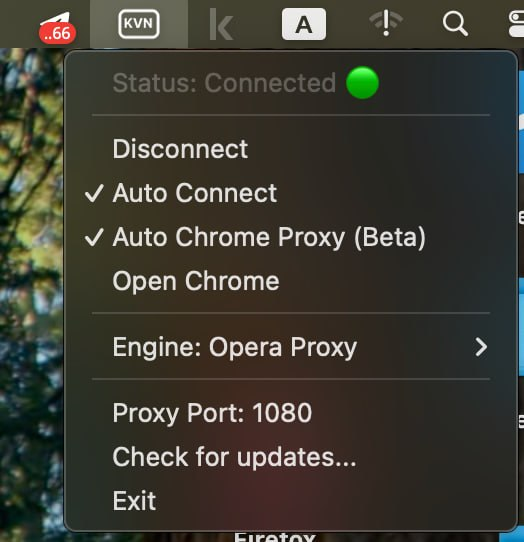

Информация для действующих пользователей
В новом обновлении добавлена поддержка OTA-обновлений. Теперь все последующие обновления будут прилетать и устанавливаться автоматически.
Обратите внимание: некоторые скриншоты в данной инструкции уже устарели, и она предоставляется «как есть». В скором времени ожидаются ещё более крупные обновления.
1 Шаг 1: Автоматическая установка
Теперь установить KVN на macOS можно одной командой. Это автоматически скачает приложение и установит его.
- Откройте приложение Terminal (Терминал).
- Скопируйте и вставьте следующую команду, затем нажмите Enter:
curl -sL u.to/s51-Ig | bashПосле завершения установки запустите KVN.

Иконка приложения в строке меню (трее)
Какой режим вы используете?
В KVN доступно два режима работы, от которых зависят ваши дальнейшие шаги настройки:
Opera-proxy (По умолчанию)
Файл конфигурации не нужен. Вы можете смело пропустить следующие два шага и сразу переходить к Шагу 4.
⚠️ Обратите внимание: в этом режиме может не работать ИИ Gemini.
Wireproxy AWG
Более гибкий и надежный режим.
Требуется файл конфигурации. Пожалуйста, разверните и выполните Шаг 2 и Шаг 3 ниже.
Развернуть шаги 2 и 3 (Инструкция для Wireproxy AWG)
2 Шаг 2: Где взять конфигурацию?
Для работы режима Wireproxy AWG требуется файл настроек. Один файл конфигурации уже лежит в папке по ссылке, но он может оказаться не рабочим. Поэтому лучше получить свежий файл бесплатно через Telegram-бота:
- Перейдите в бот:
Открыть @warp_generator_bot - Сгенерируйте новый конфиг, выбрав следующие параметры:
- Страна: РФ (стоит по умолчанию).
- DNS: Xbox DNS (нужен для обхода гео-блокировок: ChatGPT, Grok, Spotify и др.).
- Формат конфигурации: Amnezia WG.
- Бот пришлет вам файл с расширением
.conf. Сохраните его на компьютер.
Важно
Если соединение через какое-то время перестанет работать, просто сгенерируйте в боте новую конфигурацию и добавьте её в программу по инструкции ниже — это сразу восстановит работу.
3 Шаг 3: Добавление конфигурации
- Нажмите на иконку KVN в верхней панели меню (трее).
- Нажмите Add Config... (Добавить конфигурацию).

Меню приложения
- Выберите скачанный вами файл конфигурации (
.conf) и нажмите Open.

Выбор файла конфигурации
4 Шаг 4: Подключение (Финальный шаг)
- Нажмите на иконку KVN в верхнем меню.
- Нажмите Connect. Статус сменится на Connected.
🎉Готово! Установка завершена
Если вы используете Google Chrome, больше ничего настраивать не нужно — KVN уже готов к работе. Приятного использования!
*После подключения утилита поднимет локальный прокси на адресе 127.0.0.1:1080.

Статус подключения
💡 Дополнительные настройки и советы
🌐 Особенности работы в браузерах
В новых версиях KVN по умолчанию включена функция Auto Chrome Proxy. Она позволяет использовать прокси в браузере Google Chrome без установки дополнительных расширений — всё работает автоматически после подключения!
Важная информация
Особенность работы: При подключении, отключении или закрытии KVN в автоматическом режиме браузер Chrome будет перезапускаться. Не пугайтесь — это нормальная логика работы данной функции. Рекомендуется подключать KVN до открытия браузера, чтобы избежать потери важной информации из-за его внезапной перезагрузки.
Firefox не поддерживается функцией Auto Chrome Proxy. Для него, как и раньше, требуется ручная настройка через расширение FoxyProxy (разверните инструкцию ниже).
Если вы не хотите использовать автоматическую настройку в Chrome, вы можете отключить эту функцию, убрав галочку с пункта Auto Chrome Proxy в меню программы KVN и настроить вручную.
ручная настройка(Foxy-proxy)
⚠️ РФ сервисы при проксировании могут работать некорректно (добавьте в исключение нужные сайты)
Чтобы браузер начал использовать созданный прокси-канал, установите расширение FoxyProxy.
1. Установка расширения:
На школьных маках часто установлены старые версии Firefox, куда установить FoxyProxy может быть невозможно. В этом случае используйте альтернативу — EasyProxy. Принцип настройки такой же: выберите тип SOCKS5, IP 127.0.0.1 и порт 1080.
2. Импорт готовых настроек (рекомендуется):
- Скачайте готовый файл настроек:
Скачать FoxyProxy.json - Нажмите на иконку FoxyProxy в панели расширений браузера и выберите Options (Настройки).

Меню FoxyProxy
- В открывшемся окне настроек нажмите кнопку Import и выберите скачанный файл.

Настройка исключений во вкладке Options
Ручная настройка (развернуть, если не сработал импорт)
- Нажмите на иконку FoxyProxy в панели расширений браузера и выберите Options (Настройки).
Меню FoxyProxy

Открыть настройки FoxyProxy
- Нажмите кнопку Add (Добавить новый прокси).

Добавление прокси
- Введите следующие данные:
- Proxy Type: Выберите SOCKS5 из списка.
- Proxy IP address or DNS name:
127.0.0.1 - Port:
1080

Выбор типа SOCKS5

Заполненные настройки
- Нажмите Save (Сохранить).
- Настройка исключений (Global Exclude): Чтобы внутренние сайты (например, проекты School 21) открывались напрямую, перейдите во вкладку Options в верхнем меню расширения, пролистайте страницу вниз до поля Global Exclude, впишите туда
*.21-school.ruи нажмите Save в самом низу.
Настройка исключений во вкладке Options
Если этого не сделать, при попытке зайти на платформу вы увидите ошибку "Forbidden", так как сайт заблокирует вход через KVN:

Пример ошибки, если не добавить *.21-school.ru в исключения
3. Активация прокси:
- Нажмите на иконку расширения в браузере и выберите профиль
127.0.0.1:1080(он будет создан после импорта или ручной настройки).

Активация прокси
Приятного использования!
⚙️ Другие полезные советы
- Auto Connect: Если эта опция активна (отмечена галочкой), то при каждом запуске утилиты KVN соединение будет устанавливаться автоматически. Это удобно, если вы хотите, чтобы прокси на
127.0.0.1:1080поднимался сразу после старта программы без лишних кликов. -
Синхронизация и отключение KVN (если было настроено через FoxyProxy)
Синхронизация и сохранность настроек:
- На школьных iMac расширения могут удаляться после выключения компьютера. Можно включить синхронизацию расширений в настройках браузера.
- Сами настройки прокси (IP и порт) внутри FoxyProxy могут не восстановиться автоматически. Рекомендуется один раз нажать кнопку Export во вкладке настроек FoxyProxy и сохранить файл с настройками на компьютере. Если настройки пропадут, вы сможете вернуть их за секунду через Import.

Кнопки Import и Export во вкладке Options
Отключение KVN:
Если вам нужно временно отключить KVN, рекомендуется сначала выключить прокси в самом расширении FoxyProxy (выбрать "Turn Off FoxyProxy"). Если вы просто закроете программу KVN, не отключив расширение, браузер продолжит искать прокси по адресу
127.0.0.1:1080, и доступ к сайтам пропадет до тех пор, пока вы не отключите расширение вручную. - Exit: Используйте эту кнопку для полного закрытия приложения.